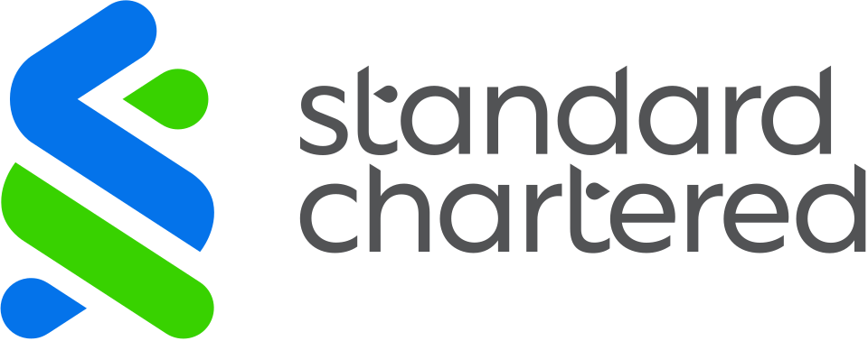

은행·금융 80
예금과 대출을 기반으로 하는 은행과 금융지주 브랜드를 모았습니다. 신뢰와 안정감을 전해야 하는 업종이라 오래된 문장(紋章)이나 이니셜을 현대적으로 다듬어 쓰는 경우가 많고, 인수합병을 거치며 이름과 로고가 바뀐 사례도 흔합니다. 브랜드 아틀라스에 수록된 은행·금융 80개를 로고와 함께 정리했습니다. 편입 기준은 위키데이터의 분류와 업종 정보, 그리고 편집자가 브랜드 설명을 확인한 경우로 한정했습니다.
다른 컬렉션 보기
컬렉션 전체 →기원 국가가 확인된 브랜드는 66개이며 미국 19개, 한국 16개, 영국 8개, 캐나다 4개, 독일 3개 순으로 많습니다. 산업 분류로는 금융 79개, 브랜드·비즈니스 1개에 걸쳐 있습니다. 설립연도가 확인된 브랜드는 73개이며 가장 오래된 곳은 1812년, 가장 최근은 2021년에 시작했습니다. 시기별로는 1900년 이전 27개, 1900~1949년 2개, 1950~1999년 28개, 2000년 이후 16개입니다. 수록 자료로는 로고 이미지 77개, 로고 변천 자료 4개, 연혁 타임라인 12개를 갖췄습니다. 이 가운데 63개는 공식 웹사이트가 일치하는 위키데이터 개체로 연결해 두었습니다.
은행·금융 목록
품질 점수 순 상위는 로고 타일로, 나머지는 가나다순 목록으로 보입니다.
 헌팅턴 뱅크Huntington Bank미국 · 1866년
헌팅턴 뱅크Huntington Bank미국 · 1866년헌팅턴 뱅크(The Huntington National Bank)는 미국 오하이오주 컬럼버스에 본사를 둔 지역 은행으로, 1866년 설립되어…
 로이즈Lloyds영국
로이즈Lloyds영국로이즈(Lloyds)는 검은 말 심볼로 잘 알려진 영국의 대형 소매은행으로, 로이즈 뱅킹 그룹(Lloyds Banking Group)에 속한다.
네이션와이드 빌딩 소사이어티Nationwide네이션와이드 빌딩 소사이어티(Nationwide Building Society)는 영국 최대의 빌딩 소사이어티로, 주주가 아닌 회원(예금·대출…
몬조Monzo2015년몬조(Monzo)는 영국의 디지털 네오뱅크로, 물리적 지점 없이 스마트폰 앱만으로 운영되는 모바일 우선 은행이다.
 씨티Citibank1812년
씨티Citibank1812년씨티(Citi)는 미국 씨티그룹이 운영하는 글로벌 소비자·기업 금융 브랜드로, 1812년 뉴욕에서 출발한 시티뱅크 오브 뉴욕을 뿌리로 한다.
 홍콩상하이은행HongkongBank1865년
홍콩상하이은행HongkongBank1865년홍콩상하이은행(HongkongBank, Hongkong and Shanghai Banking Corporation)은 1865년 토머스…
 이타우Banco Itaú1945년
이타우Banco Itaú1945년이타우(Itaú)는 브라질을 대표하는 민간 은행으로, 1945년 상파울루에서 영업을 시작해 2008년 우니방쿠와 합병하며 이타우 우니방쿠로…
 한국씨티은행Citibank Korea한국 · 1983년
한국씨티은행Citibank Korea한국 · 1983년한국씨티은행(Citibank Korea)은 미국 씨티그룹이 지배하는 대한민국의 외국계 시중은행이다.
 IBK기업은행Industrial Bank of Korea한국 · 1961년
IBK기업은행Industrial Bank of Korea한국 · 1961년IBK기업은행(Industrial Bank of Korea)은 중소기업 금융 지원을 목적으로 중소기업은행법에 따라 설립된 대한민국의 국책…
우리은행Woori Bank한국 · 1899년우리은행(Woori Bank)은 우리금융지주 산하의 대한민국 시중은행이다.
가와사키 신용금고Kawasaki Shinkin Bank가와사키 신용금고(川崎信用金庫)는 일본 가와사키시의 신용금고다.
 카카오뱅크KakaoBank한국 · 2016년
카카오뱅크KakaoBank한국 · 2016년카카오뱅크(KakaoBank)는 카카오 계열의 인터넷전문은행으로, 2016년 법인 설립 후 2017년 서비스를 시작했다.
 ING 그룹ING Group네덜란드 · 1991년
ING 그룹ING Group네덜란드 · 1991년ING 그룹(ING Group)은 암스테르담에 본사를 둔 네덜란드의 다국적 은행·금융 서비스 기업이다.
 유럽 부흥 개발 은행European Bank for Reconstruction and Development영국 · 1991년
유럽 부흥 개발 은행European Bank for Reconstruction and Development영국 · 1991년유럽 부흥 개발 은행(European Bank for Reconstruction and Development)은 동구권과 소련의 붕괴 이후…
 중국공상은행Industrial and Commercial Bank of China중국 · 1984년
중국공상은행Industrial and Commercial Bank of China중국 · 1984년중국공상은행(Industrial and Commercial Bank of China)은 베이징시에 본사를 둔 중국의 부분 국유 다국적…
 캐나다 임페리얼 상업은행Canadian Imperial Bank of Commerce캐나다 · 1961년
캐나다 임페리얼 상업은행Canadian Imperial Bank of Commerce캐나다 · 1961년캐나다 임페리얼 상업은행(Canadian Imperial Bank of Commerce)은 토론토 금융지구의 CIBC Square에 본사를 둔…
 크레디 아그리콜Credit Agricole Group프랑스 · 2000년
크레디 아그리콜Credit Agricole Group프랑스 · 2000년크레디 아그리콜(Crédit Agricole Group)은 프랑스의 국제 은행 그룹이자 세계 최대의 협동조합형 금융기관이다.
 RBC 은행Royal Bank of Canada캐나다 · 1864년
RBC 은행Royal Bank of Canada캐나다 · 1864년RBC 은행(Royal Bank of Canada)은 캐나다의 다국적 금융 서비스 기업이다.
 PNC 파이낸셜 서비시즈PNC Financial Services미국 · 1982년
PNC 파이낸셜 서비시즈PNC Financial Services미국 · 1982년PNC 파이낸셜 서비시즈(PNC Financial Services)는 미국의 은행 지주회사이자 금융 서비스 기업이다.
 BNP 파리바BNP Paribas프랑스 · 2000년
BNP 파리바BNP Paribas프랑스 · 2000년BNP 파리바(BNP Paribas)는 프랑스 파리에 본점을 둔 프랑스 최대 은행 그룹이다.
 잉글랜드 은행Bank of England영국
잉글랜드 은행Bank of England영국잉글랜드 은행(Bank of England)은 1694년 설립된 영국의 중앙은행이다.
 코메르츠방크Commerzbank AG독일 · 1870년
코메르츠방크Commerzbank AG독일 · 1870년코메르츠방크(Commerzbank AG)는 독일 프랑크푸르트암마인에 본사를 둔 유럽의 은행이다.
도이체 방크Deutsche Bank독일 · 1870년도이체 방크(Deutsche Bank)는 독일 프랑크푸르트에 본사를 둔 주요 상업은행이자 세계적인 투자은행이다.
 빌바오 비스카야 아르헨타리아 은행Banco Bilbao Vizcaya Argentaria스페인 · 1999년
빌바오 비스카야 아르헨타리아 은행Banco Bilbao Vizcaya Argentaria스페인 · 1999년빌바오 비스카야 아르헨타리아 은행(Banco Bilbao Vizcaya Argentaria)은 1999년 기존 은행들의 인수합병으로 설립된…
 스코틀랜드 왕립은행The Royal Bank of Scotland영국
스코틀랜드 왕립은행The Royal Bank of Scotland영국스코틀랜드 왕립은행(The Royal Bank of Scotland)은 스코틀랜드 에든버러에 본사를 둔 영국의 대형 소매·기업 은행이다.
 스웨드뱅크Swedbank스웨덴 · 1997년
스웨드뱅크Swedbank스웨덴 · 1997년스웨드뱅크(Swedbank)는 스웨덴에 기반을 둔 다국적 은행 그룹이다.
 신한금융그룹Shinhan Financial Group한국 · 2001년
신한금융그룹Shinhan Financial Group한국 · 2001년신한금융그룹(Shinhan Financial Group)은 2001년 설립된 한국 최초의 민간 금융지주회사다.
 한델스방켄Handelsbanken스웨덴 · 1871년
한델스방켄Handelsbanken스웨덴 · 1871년한델스방켄(Handelsbanken)은 1871년 설립되어 스웨덴 스톡홀름에 본사를 둔 북유럽 은행이다.
국제 개발 협회International Development Association미국 · 1960년국제 개발 협회(International Development Association)는 개발도상국의 경제개발을 돕기 위해 설립된…
 뉴욕멜론은행The Bank of New York Mellon미국 · 2007년
뉴욕멜론은행The Bank of New York Mellon미국 · 2007년뉴욕멜론은행(The Bank of New York Mellon)은 뉴욕에 본사를 둔 미국의 국제 금융 서비스 기업이다.
연방준비제도Federal Reserve System미국 · 1913년연방준비제도(Federal Reserve System)는 미국의 중앙은행이며, 약칭은 연준국이다.
 버진 그룹Virgin Group영국 · 1970년
버진 그룹Virgin Group영국 · 1970년버진 그룹(Virgin Group)은 리처드 브랜슨이 창립한 영국의 기업 집단이다.
 우니크레디트UniCredit이탈리아 · 1998년
우니크레디트UniCredit이탈리아 · 1998년우니크레디트(UniCredit)는 이탈리아 밀라노에 본사를 둔 다국적 은행 그룹이다.
 미쓰비시UFJ파이낸셜 그룹Mitsubishi UFJ Financial Group일본 · 2005년
미쓰비시UFJ파이낸셜 그룹Mitsubishi UFJ Financial Group일본 · 2005년미쓰비시UFJ파이낸셜 그룹(Mitsubishi UFJ Financial Group)은 일본의 주요 금융지주회사이다.
 JP모건 체이스JPMorgan Chase미국 · 1968년
JP모건 체이스JPMorgan Chase미국 · 1968년JP모건 체이스(JPMorgan Chase)는 뉴욕에 본사를 둔 미국 은행이다.
 크레디트 스위스Credit Suisse스위스 · 1856년
크레디트 스위스Credit Suisse스위스 · 1856년크레디트 스위스(Credit Suisse)는 취리히에 기반을 두고 투자은행, 프라이빗 뱅킹과 자산운용을 제공해온 스위스 금융기관이며 현재…
 리먼 브라더스Lehman Brothers미국 · 1850년
리먼 브라더스Lehman Brothers미국 · 1850년리먼 브라더스(Lehman Brothers)는 투자은행, 증권 거래, 투자관리, 사모투자와 자산관리 사업을 전개했던 미국의 국제 금융회사이다.
 웰스 파고Wells Fargo미국 · 1852년
웰스 파고Wells Fargo미국 · 1852년웰스 파고(Wells Fargo)는 예금, 주택 융자, 데빗 카드 등 은행 업무를 제공하며 미국 전역에 자회사를 둔 다국적 금융 서비스…
 NH농협금융지주NH Nonghyup Financial Group2012년
NH농협금융지주NH Nonghyup Financial Group2012년NH농협금융지주는 농협중앙회가 100% 소유한 한국의 대형 금융지주회사로, 2012년 설립됐다.
 몬트리올 은행Bank of Montreal캐나다 · 1817년
몬트리올 은행Bank of Montreal캐나다 · 1817년몬트리올 은행(Bank of Montreal)은 1817년에 설립된 캐나다의 은행이다.
 단스케 은행Danske Bank덴마크 · 1871년
단스케 은행Danske Bank덴마크 · 1871년단스케 은행(Danske Bank)은 코펜하겐에 본사를 둔 덴마크의 다국적 은행·금융 서비스 기업이다.
 한국은행Bank of Korea한국 · 1950년
한국은행Bank of Korea한국 · 1950년한국은행(Bank of Korea)은 통화신용정책의 수립과 집행을 통해 물가안정을 도모하는 대한민국의 중앙은행이다.
 그라민 은행Grameen Bank1983년
그라민 은행Grameen Bank1983년그라민 은행(Grameen Bank)은 방글라데시에서 가난한 사람을 대상으로 담보와 신원보증 없이 소액 신용대출을 제공하는 은행이자…
 스베르방크Sberbank러시아 · 1991년
스베르방크Sberbank러시아 · 1991년스베르방크(Sberbank)는 모스크바에 본사를 둔 러시아의 국가 다수 지분 소유 은행·금융 서비스 기업이다.
 모건 스탠리Morgan Stanley미국 · 2008년
모건 스탠리Morgan Stanley미국 · 2008년모건 스탠리(Morgan Stanley)는 뉴욕에 본사를 두고 기업, 정부, 금융기관과 개인에게 다양한 금융 서비스를 제공하는 미국의…
 신한은행Shinhan Bank한국 · 1897년
신한은행Shinhan Bank한국 · 1897년신한은행(Shinhan Bank)은 신한금융지주의 자회사로, 대한민국 최초의 순수 민간자본으로 설립된 시중은행이다.

스탠다드차타드 은행Standard Chartered영국 · 1853년스탠다드차타드 은행(Standard Chartered)은 영국 런던에 본사를 둔 영국계 은행이다.
하나은행Hana Bank한국 · 1967년하나은행(Hana Bank)은 대한민국에 본사를 둔 은행이다.